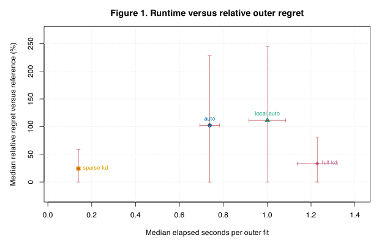
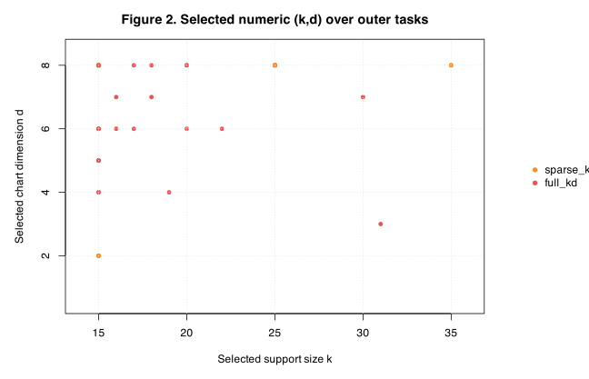
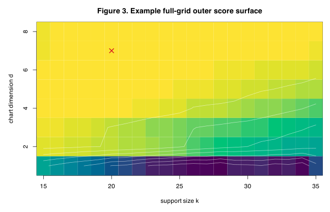
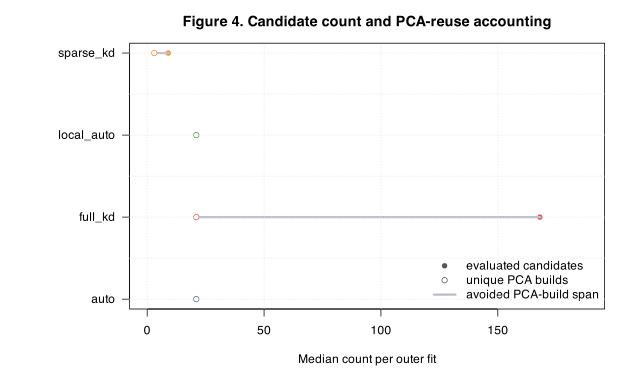
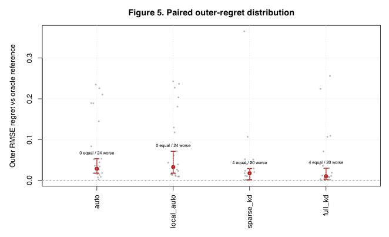

CSD5 Coupled Support-Size and Chart-Dimension Evaluation
This focused CSD5 report asks whether a sparse coupled selector over support size \(k\) and chart dimension \(d\) can approximate a full Cartesian reference while reducing candidate count and repeated local-PCA work. The report is truth-facing: each strategy is selected using only inner folds on the outer-training set, then scored on an outer fold that no selector saw.
For an outer task \(s\), the reported error for method \(m\) is
\[ R_{s,m}=\left\{\frac{1}{|I_s^{\mathrm{out}}|} \sum_{i\in I_s^{\mathrm{out}}}(\hat f_{s,m}(x_i)-f_i)^2\right\}^{1/2}, \]where \(I_s^{\mathrm{out}}\) is the held-out outer fold, \(f_i\) is the known synthetic truth, and \(\hat f_{s,m}\) is the fit selected by method \(m\). The full-grid outer reference is
\[ R_s^{\star}=\min_{(k,d)\in\mathcal G_{\mathrm{full}}} R_{s,(k,d)}, \qquad \Delta_{s,m}=R_{s,m}-R_s^{\star}. \]Thus positive regret \(\Delta_{s,m}\) means the selected strategy was worse than the full-grid truth-facing reference on that same outer fold. Because an absolute RMSE loss is difficult to interpret without the scale of the task, the main figures also report percent relative regret
\[ \Delta^{\mathrm{rel}}_{s,m} = 100\, \frac{R_{s,m}-R_s^{\star}}{R_s^{\star}+\epsilon}, \qquad \epsilon=10^{-12}. \]The report also shows the equivalent RMSE ratio
\[ \kappa_{s,m} = \frac{R_{s,m}}{R_s^{\star}+\epsilon} = 1 + \frac{\Delta^{\mathrm{rel}}_{s,m}}{100}. \]A value of \(5\) means that the selected strategy had 5% larger outer RMSE than the full-grid reference on the same task. A value of \(100\) means twice the reference RMSE, equivalently \(\kappa=2\). The tiny \(\epsilon\) only protects against division by zero and has no visible effect in this result bundle.
Design And Fit Accounting
The full Cartesian reference universe is \(\mathcal G_{\mathrm{full}}=\{15,16,\ldots,35\}\times\{1,2,\ldots,8\}\), filtered by \(q(d,g)+m\le k\). Here \(g=1\), \(q(d,1)=d+1\), and the design margin is \(m=2\), so every planned candidate is feasible. The comparison uses four synthetic geometry families, two repetitions, three matched outer folds, and identical inner-fold rules for all selectors.
Status columns. attempted is the
number of outer tasks planned for a strategy; ok is the number
that returned a finite selected fit and outer score; failed
combines errors, timeouts, and non-finite fits. No rows were excluded from the
summary.
| strategy | attempted | ok | failed |
|---|---|---|---|
| auto | 24 | 24 | 0 |
| full_kd | 24 | 24 | 0 |
| local_auto | 24 | 24 | 0 |
| sparse_kd | 24 | 24 | 0 |
The strategy arms are auto (one global automatic chart
dimension), local_auto (anchor-specific automatic dimensions),
sparse_kd (sparse numeric \((k,d)\) skeleton), and
full_kd (full numeric Cartesian selector using inner CV).
Strategy Summary
This table summarizes successful outer tasks. \(R_{\mathrm{med}}\) is the
median outer RMSE \(R_{s,m}\), \(\Delta_{\mathrm{med}}\) is the median regret
\(\Delta_{s,m}\), \(\Delta^{\mathrm{rel}}_{\mathrm{pct,med}}\) is the median
percent relative regret, and \(\kappa_{\mathrm{med}}\) is the median RMSE
ratio \(R_{s,m}/R_s^\star\). \(T_{\mathrm{med}}\) is median end-to-end serial
wall time per outer fit in seconds, cand is the median evaluated
candidate count, and pca is the median number of unique reusable
local-PCA support groups. Values are medians across 24 matched outer tasks per
strategy. The absolute regret, percent relative regret, and ratio columns
should be read together: the first gives the raw RMSE loss, while the other two
say how large that loss is relative to the task reference error.
| strategy | R_med | Delta_med | Delta_rel_pct_med | R_ratio_med | T_med | cand_med | pca_med | n_ok | fail_rate |
|---|---|---|---|---|---|---|---|---|---|
| full_kd | 0.07801 | 0.01002 | 33.39 | 1.334 | 1.229 | 168 | 21 | 24 | 0 |
| sparse_kd | 0.08544 | 0.01411 | 24.19 | 1.242 | 0.1395 | 9 | 3 | 24 | 0 |
| local_auto | 0.1037 | 0.02933 | 111.4 | 2.114 | 1.001 | 21 | 21 | 24 | 0 |
| auto | 0.09671 | 0.03101 | 102.2 | 2.022 | 0.738 | 21 | 21 | 24 | 0 |
Full linked artifacts: outer scores, full-grid candidate scores, strategy summary, family summary, and metadata.
Runtime And Relative Regret
This diagnostic asks whether sparse coupled selection reduces time without moving far from the full-grid outer reference. The vertical axis is percent relative regret, so a value of 10 means a 10% larger outer RMSE than the reference. The red intervals are median absolute deviations, shown as descriptive spread rather than inferential confidence intervals.

Figure 1. Runtime versus percent relative outer regret. Each labeled point is a strategy median across matched outer tasks. Lower is better on the vertical axis, and farther left is faster. Red intervals show median absolute deviations across tasks for runtime and percent relative regret; lower vertical interval ends are capped at zero because relative regret is nonnegative.
The sparse selector evaluates a much smaller candidate set and is visibly
faster than the full numeric grid in this focused LPS lane. The median regret
gap between sparse and full numeric selection remains interpretable on the
percent scale: the sparse rule pays a modest relative-error cost for a large
runtime and PCA-build reduction. The cost is not negligible, however:
sparse_kd has median absolute regret 0.014, median
relative regret 24.2%, and median RMSE ratio 1.24. The full_kd selector has median absolute regret 0.010, median relative regret 33.4%, and median RMSE ratio 1.33. These numbers mean that CSD5 supports the sparse rule as a promising
runtime--accuracy compromise, not as a near-oracle rule.
Selected Numeric Candidates
This section asks whether the sparse selector chooses systematically different support sizes or chart dimensions from the full numeric selector.

Figure 2. Selected numeric \((k,d)\) values for sparse and full numeric selectors over all matched outer tasks. Horizontal position is selected support size \(k\); vertical position is selected chart dimension \(d\).
The plot should be read as a selection-behavior diagnostic, not as a score plot. Different selected \((k,d)\) values are acceptable when the outer score surface is flat; they become concerning only when paired regret in Figure 5 is large.
Reference Surface
This example shows the full-grid outer target for one held-out task. It is included to make the phrase "full-grid reference" concrete: every feasible numeric pair is scored on the same held-out truth target.

Figure 3. Example full-grid outer score surface for the embedded 1D curve, repetition 1, outer fold 1. Colors encode outer truth RMSE; the red cross marks the best feasible \((k,d)\) candidate for that outer task.
The score surface is not optimized inner CV. It is an audit reference computed after selection, using the known synthetic truth on the outer fold.
PCA-Reuse Accounting
This diagnostic asks how much local-PCA work is avoided by reuse. For numeric grid arms, lower-dimensional chart candidates reuse the maximum-dimension PCA coordinates within each support/kernel group.

Figure 4. Candidate count and PCA-reuse
accounting. Filled points are median evaluated candidates; open points are
median unique PCA builds. The connecting segment is the candidate-build span
covered by reuse. The auto and local_auto arms are
not numeric dimension-grid arms, so they have no avoided-build segment.
The sparse numeric selector uses three reusable PCA support groups in this evaluation, compared with 21 groups for the full numeric grid. This is the mechanism behind the runtime reduction seen in Figure 1.
Paired Outer-Regret Comparison
This paired diagnostic compares every method to the same full-grid outer oracle on each matched task. Points are task-level percent relative regrets \(\Delta^{\mathrm{rel}}_{s,m}\). Red points and intervals are Bayesian-bootstrap medians and 95% credible intervals for the median paired relative regret. The label above each method gives the number of tasks tied with the oracle and the number worse than the oracle, using tolerance \(10^{-8}\) on the absolute regret scale.

Figure 5. Paired percent relative-regret distribution relative to the full-grid truth-facing reference. The dashed line is zero regret; lower values are better, and zero is the best possible value under this reference definition. The vertical axis uses a \(\log_{10}(1+x)\) display transform but labels ticks in ordinary percent units, because the relative regrets span orders of magnitude. Percent relative regret makes large-looking absolute RMSE losses easier to judge against the error scale of the matched task.
The paired view is the main method-comparison evidence. It shows whether a strategy has occasional severe misses even when its median summary looks acceptable. The percent scale is deliberately sobering: even small absolute RMSE gaps can become large relative gaps when the full-grid reference RMSE is very small. This is why the report retains both \(\Delta_{s,m}\) and \(\kappa_{s,m}\), rather than using relative regret alone.
Family-Level Check
The linked family summary separates homogeneous manifolds, the heterogeneous surface--line union, and the simplex-boundary geometry. This smoke-sized evaluation suggests that sparse coupled selection is especially competitive on the heterogeneous and simplex-boundary cells in this run, but this is not yet a claim about OD density recovery. OD subject-visit laws require a separate evaluation with density-facing targets.
What We Learned
The sparse numeric \((k,d)\) selector behaves as intended in this focused
LPS evaluation: it uses far fewer candidate evaluations and reusable PCA
groups than the full numeric grid. The relative-regret scale prevents an
overly optimistic interpretation: the sparse rule is the best practical
runtime--accuracy compromise in this report, but its median RMSE is still about
1.24 times the full-grid oracle reference. The automatic chart
dimension rules are farther away, with median RMSE ratios about 2.02 for auto and 2.11 for local_auto.
One subtle point is that absolute and relative summaries need not rank
strategies identically. The full_kd arm has the smaller median
absolute regret, while sparse_kd has the smaller median relative
regret in this bundle. That happens because the denominator \(R_s^\star\)
varies across outer tasks, so a small raw loss on an easy task can be a large
percentage loss. For this reason, CSD5 should be read as evidence that the
sparse coupled rule is useful and efficient, not as evidence that the
CV-selected rules have closed the gap to the truth-facing oracle.
The evidence is not a default-change decision. It is a validation that the CSD sparse-grid machinery is worth carrying into larger PS-LPS and OD-style experiments, where the full Cartesian grid is often too expensive to run exhaustively.
Reproducibility
Working directory: ~/current_projects/geosmooth.
Generate result artifacts:
Rscript dev/methods/lps/ci/csd5_coupled_kd_evaluation_run.RRender this report from existing artifacts:
Rscript dev/methods/lps/ci/csd5_coupled_kd_evaluation_render.R --report-dir=~/current_projects/geosmooth/dev/methods/lps/reports/csd5_coupled_kd_evaluation_20260708The result bundle contains all CSV tables and SVG figures used by this HTML
file. The main package development gate after report regeneration was
make test.